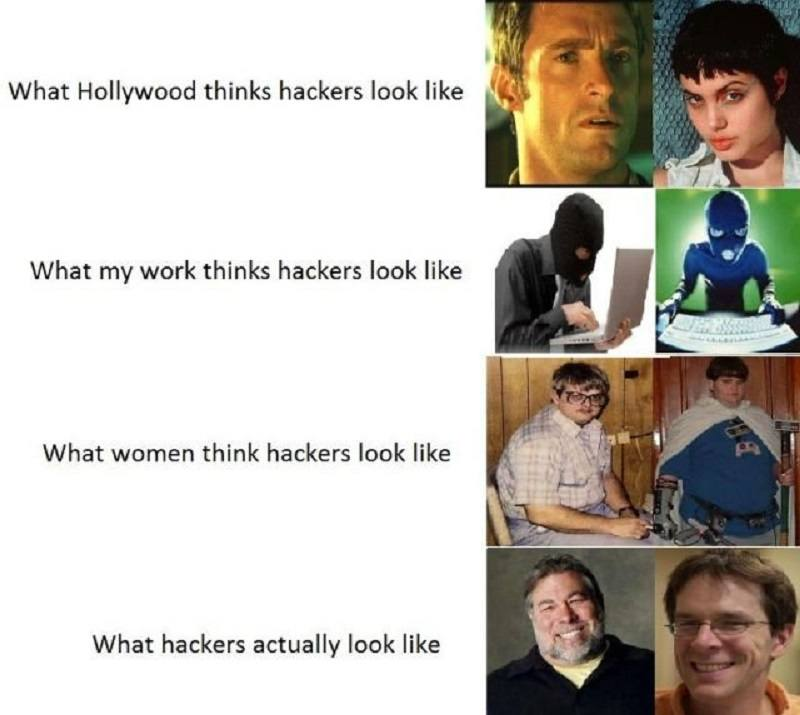
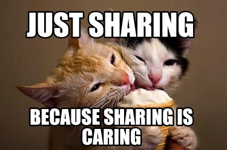
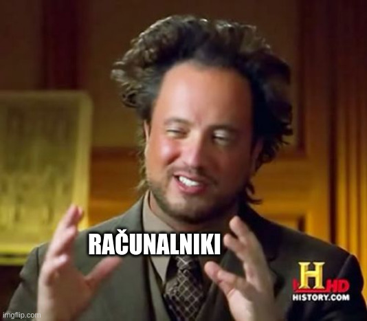
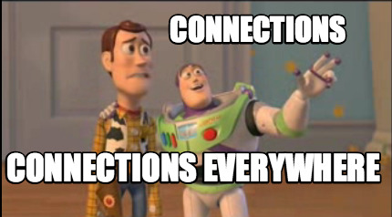
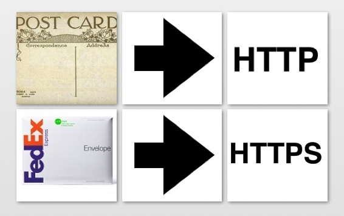
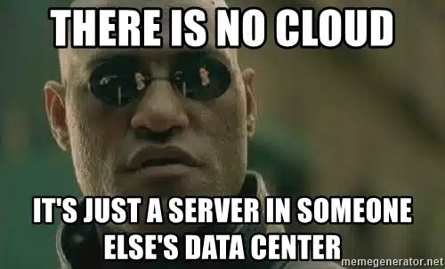
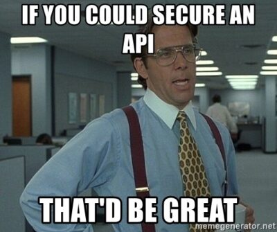

Hekerska miselnost
Hacker mindset
O meni
Rojen pred Googlom, začel programirati približno isti čas, kot je prišel Google.
Hekerska miselnost ne pomeni nezakonitega vdiranja v računalniške sisteme. Gre za način pristopa k problemom s specifičnim naborom stališč in prepričanj. Gre za kreativno premagovanje omejitev, iskanje pametnih rešitev ter nenehno učenje in raziskovanje.
Radovednost in žeja po znanju
Spretnost pri reševanju problemov
"Zmorem" odnos in vztrajnost
Prepričanje v deljenje in sodelovanje
Zdravo neupoštevanje avtoritete in konvencij
Igriv in raziskovalen pristop
Kako stvari delujejo?
Pot nekega snapa
Snapchat, kje si?
Domene, IP naslovi in DNS strežniki

Torej, kje je snapchat?

Kaj se zgodi, če bi nekdo ponagajal in pomešal IP naslove v tem internetnem telefonskem imeniku?
Kaj gre lahko narobe?
- Zastrupljanje DNS predpomnilnika
- Ponarejanje DNS
- Ugrabitev domene
- ...
Povežimo se!
Sedaj vemo IP naslov Snapchata, čas je da vzpostavimo povezavo. Vzpostavitev povezave lahko primerjamo s pošiljanjem pošte.
HTTP in HTTPS
HTTP: Povezava je nekriptirana, podobno kot pošiljanje razglednice z morja. Vsak, ki dobi paket v roke, lahko prebere vsebino.
HTTPS: Vsebina je kriptirana, podobno kot pismo v ovojnici. Kdro dobi paket v roke, lahko vidi samo, kdo je naslovnik, ne more pa prebrati vsebine.
Kaj vse gre lahko narobe?
- Nepravilne konfukuracije: uporaba starih in ranljivih protokolov, uporaba šibkih šifer
- Napadi MITM
- Ranljivosti v implementaciji protokolov
- Napadi onemogočanja storitve
- ...
Snap je prisel na cilj
Validacija, avnentikacija in avtorizacija
Kaj gre lahko narobe pri validaciji
- Nezadostna validacija:
- XSS
- SQL vrivanje
- Vrivanje ukazov
- Napadi onemogočanja storitve preko regex validacije
- Nekonsistentna validacija: podatki se validirajo na strani klienta, ne pa tudi strežnika
- ...
Kaj gre lahko narobe pri avtentikaciji
- Šibka gesla
- Napake v logiki
- Predvidljiv ID seje
- Polnjenje poverilnic (credential stuffing)
- Napadi s surovo silo
- Odsotnost MFA
- Nepravilna hramba poverilnic
Kaj gre lahko narobe pri avtorizaciji
- Nepreverjanje avtorizacije
- Napake v logiki
- Nekonsistentnosti